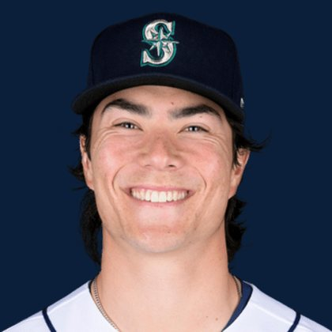

BASEBALLKEEP
Dynasty · Redraft · Diamond
Also: Ball Keep Football · PitchKeep
Player File · SP SEA

Bryan Woo
#22 · SP · Seattle Mariners · age 26 · B/T RR · 6' 2" / 205 lbs · MLB debut 2023 · Oakland, USA
Keep avg39.57
# Boards23
BK Value3,534
Spread18–57
Pitching
| Year | G | GS | W | L | SV | HLD | IP | K | BB | HR | ERA | WHIP | K/9 |
|---|---|---|---|---|---|---|---|---|---|---|---|---|---|
| 2026 | 24 | 24 | 9 | 8 | 0 | 0 | 138.1 | 137 | 29 | 15 | 4.10 | 1.08 | 8.91 |
| 2025 | 30 | 30 | 15 | 7 | 0 | 0 | 186.2 | 198 | 36 | 26 | 2.94 | 0.93 | 9.55 |
The Keep#36BK 3,534
BK's Pitchers#10BK 6,834
Redraft#36BK 3,534
The 2026 line
Keep #36 · avg 39.57 · 23 boards · 4.10 ERA, 1.08 WHIP, 137 K in 138.1 IP
Baseball Savant
Starcast · spray · pitch
Percentile ranks (Starcast) plus the official Savant spray chart for bats and pitch chart for arms. Open the full Baseball Savant page.
Pitcher · 2026
xERA
70
xwOBA
70
FB Velo
74
FB Spin
49
K %
62
BB %
96
Whiff %
45
Chase %
81
Barrel %
59
Hard Hit %
14
EV
24
Max EV
11
Pitch chart
Board graph
Spread 18–57 · 23 sources
Every Board
Spread 18–57 · 23 sources
| Source | Rank |
|---|---|
| Pitcher List | 18 |
| Razzball | 34 |
| Enos Slaughter | 34 |
| FantasyPros Dynasty ECR | 36 |
| CBS Sports | 37 |
| RotoGraphs Model | 38 |
| ESPN | 38 |
| NFBC ADP | 38 |
| Ottoneu | 38 |
| The Athletic | 38 |
| Mastersball | 38 |
| Yahoo Fantasy | 38 |
| ATC ROS | 38 |
| Fantasy Baseballers | 39 |
| Baseball Prospectus | 40 |
| The Dynasty Dugout | 40 |
| Baseball America | 40 |
| MLB Pipeline mix | 40 |
| Dynasty League Baseball | 41 |
| Four-Seam Fantasy | 41 |
| TDG Points | 52 |
| RotoWire | 57 |
| FanGraphs The Board | 57 |
BK News
- Seattle Mariners Bryan Woo Named "One of Most Likely to Be Traded" By Popular Show
- Bryan Woo: Won't start against Cubs
On The Keep nearby — Brice Turang (#34) · Chase Burns (#35) · Jordan Walker (#37) · Dylan Cease (#38)
All players · The Keep · BK News · The Lineup · Pitchers · Calculator